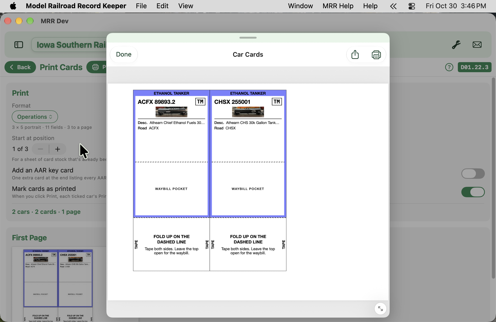
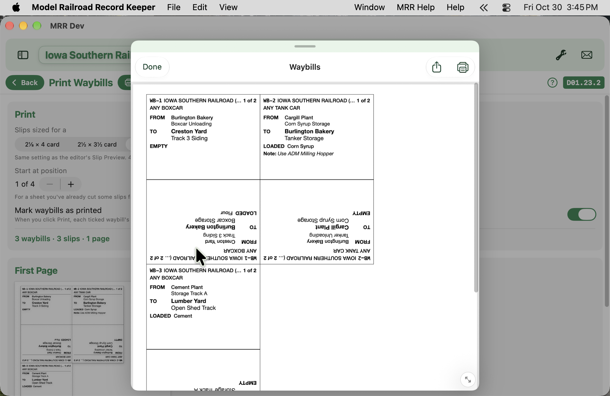
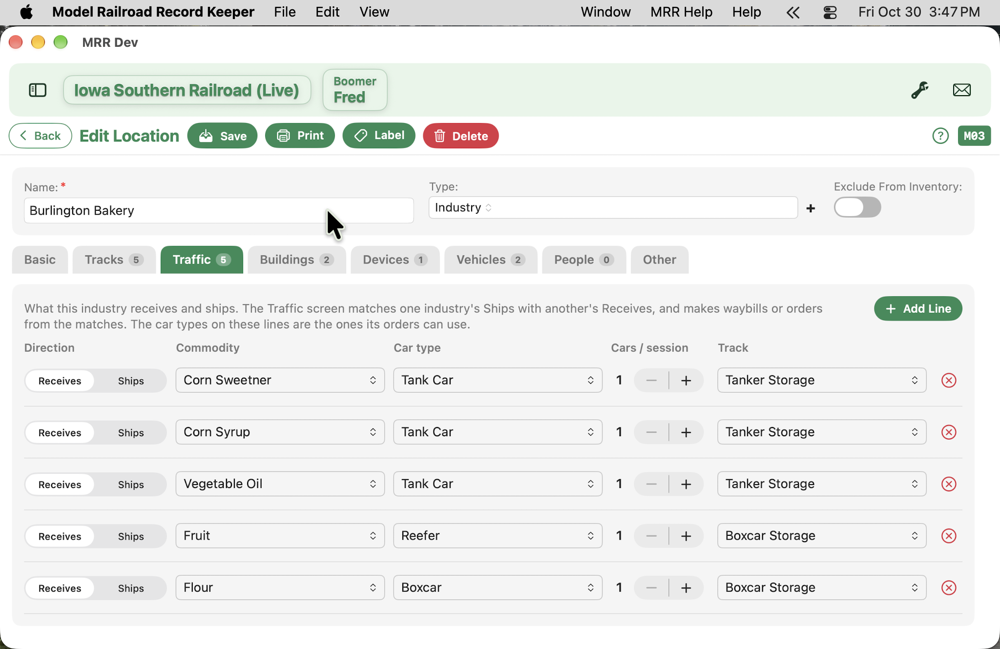

Paperwork that rides with the car
Car cards and waybills are the classic way to run realistic freight on a layout: each car gets a card, the card has a pocket, and the waybill in the pocket says where the car goes next. Version 2.6 of Model Railroad Record Keeper prints both, straight from the cars you've already entered.
Set up your car card once

Open Settings → Your Railroad → Car Cards → Format and start from one of the ready-made formats (Operations, Photo Card or Roster Card) or build your own. Pick a size (2⅛×4, 2½×3½, 3×5 or 4×6), portrait or landscape, then turn on the details you want printed: reporting marks, AAR code, car type, road, color, length, even a photo. A color band by car type gives you the classic buff, green and red at a glance.
Pick the cars and print
Add cars to your Card List from Rolling Stock, either one at a time from a car or everything showing in the list. Set copies, tick the ones to print, and the app keeps a printed-on date so you know what's done. Cards can print with a fold-up waybill pocket underneath: fold on the dashed line, tape the sides, and it's ready for a slip. Printing on a partly used sheet? Choose the starting position.
Write the waybills

Under Settings → Your Railroad → Waybills, each waybill is for any car of a type ("any boxcar") or one specific car, with one to four cycles. Each cycle has a shipper and consignee picked from your Locations and their tracks, loaded or empty, and the lading.
Waybills print as fold-over slips sized to your cards. Cut and fold, and cycles 1 and 2 sit on one side with 3 and 4 on the other. When a car finishes a move, turn the slip end-for-end to show the next one. No duplex printer needed.
Let your industries write them for you

Each location now has a Traffic tab listing what it ships and receives, by commodity and car type. From the Waybills list, Make from Traffic pairs shippers with receivers and drafts a waybill for each match: a loaded move out and an empty move back, or loaded only if you prefer. Look them over, change anything you like, and nothing is saved until you choose Make.